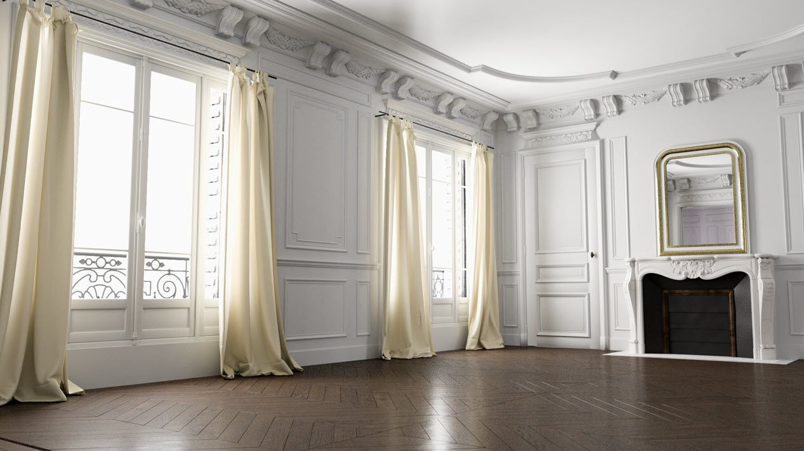
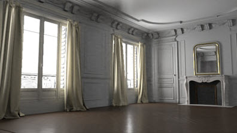
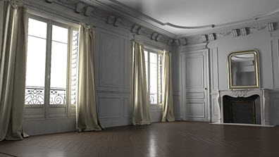

对房间内部进行降噪

本教程将介绍在巴黎式房间室内场景中减少噪波的各种方法。通常，需要大量的漫反射采样来减少内部的间接噪波。但是，如果使用大量的漫反射采样，渲染时间可能会大幅增加。因此，我们将了解如何通过降噪（OptiX™ 降噪器和 Arnold 降噪器）来减少噪波，而不必使用这么多的漫反射采样。
降噪器考虑当前像素的相邻面片，并查找给定搜索区域内的类似相邻面片以便混合在一起。
使用 skydome_light 照亮房间（建议采样数至少为 3），且 light_portals 位于窗户外部。请注意，上面的最终图像使用的 diffuse_ray_depth 为 4，而下面的测试图像使用的 diffuse_ray_depth 为 1，因此显得较暗。另请注意，对于所有渲染，摄影机 (AA) 采样数已设置为 6。
OptiX™ 降噪器更适合 IPR 渲染。
要下载演示（使用 AOV）降噪的场景文件，请单击此处。
有关 OptiX™ 降噪器和 Arnold 降噪器的详细信息，请单击此处。
漫反射采样数：2（默认值）
现在，我们将使用默认的漫反射采样数 (2) 渲染场景。噪波非常严重，尤其是在左侧间接照亮的墙上。我们可以看到，OptiX™ 降噪器*难以在使用如此低的 *diffuse_samples 的情况下生成清晰图像。
| 未使用 Optix | 使用 Optix |
Arnold 降噪器效果更好，但仍有一些“斑点”噪波可见，尤其是在间接照亮的墙上。
| 未使用 Arnold 降噪器（默认设置） | 使用 Arnold 降噪器 |
漫反射采样数：5
增加 diffuse_samples 数值可改善噪波。请注意，增加此值将增加渲染时间。但是，OptiX™ 降噪器仍无法很好地解决噪波问题。
|  | |
| 未使用 Optix | 使用 Optix |
Arnold 降噪器可生成更优质的图像。在大多数情况下，这已足够。我们将尝试进一步增加 diffuse_samples 数值，看看结果如何。
| 未使用 Arnold 降噪器（默认设置） | 使用 Arnold 降噪器 |
漫反射采样数：10
如果 diffuse_samples 设置为 10，我们将获得更加清晰的图像。但是，这将导致渲染时间显著增加。请注意 OptiX™ 降噪器如何影响窗户阳台的薄几何体。Arnold 降噪器可以更好地处理这些区域。
| 未使用 Optix | 使用 Optix |
| 未使用 Arnold 降噪器 | 使用 Arnold 降噪器 |
Arnold 降噪器设置
下面的示例图像显示了在使用默认 diffuse_samples (2) 的情况下更改某些 Arnold 降噪器设置的效果。在本例中，默认的 Arnold 降噪器设置非常适合。
方差(Variance)
过滤器的强度取决于方差参数，方差值越大，降噪效果越好。
|  | ||
| 0.2 | 0.5 | 1（默认值） |
像素搜索半径(Pixel Search Radius)
这是可以找到类似相邻面片的区域。值越高越好，但会增加降噪成本。
| 6 | 9（默认值） | 18 |
像素面片半径(Pixel Patch Radius)
这将提高降噪的柔和度（同时始终保留要素）。默认值为 3（在较大的一侧），但也可以使用较低值 0 或 1、中间值 3 以及较高值 5。
| 1 | 3（默认值） | 6 |